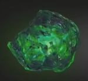

At full potential, when backed by the power Gem, the Soul Gem grants the user control over all life in the universe


| Name | Color | Powers and capabilities | Image |
|---|---|---|---|
| Soul | Orange | Allows the user to steal, control, manipulate and alter living and dead souls. The soul Gem also acts as a gateway to an idyllic pocket universe. At full potential, when backed by the power Gem, the Soul Gem grants the user control over all life in the universe |
|
| Time | Green | Allows the user to see into the past and the future; stop, slow down, speed up or reverse the flow of time; travel through time; change the past and the future; age and de-age beings, and trap people and entire universes in unending loops of time. At full potential when backed by the Power Gem, the Time Gem grants the useer omniescience and total control over the past, present and future |  |
| Space | Blue | Allows the user to exist in any location; move any object anywhere throughout reality; warp or rearrange space; teleport themselves and others; increase their speed; and alter the distance between objects contrary to the laws of phisics. At full potential, when backed by the power Gem, the Space Gem grants the user omnipresence | |
| Mind | Yellow | Allows the user to steal, control, manipulate and alter living and dead souls. The soul Gem also acts as a gateway to an idyllic pocket universe. At full potential, when backed by the power Gem, th Sul Gem grants the user control over all life in the universe | |
| Reality | Red | Allows the user to steal, control, manipulate and alter living and dead souls. The soul Gem also acts as a gateway to an idyllic pocket universe. At full potential, when backed by the power Gem, th Sul Gem grants the user control over all life in the universe | |
| Power | Purple | Allows the user to steal, control, manipulate and alter living and dead souls. The soul Gem also acts as a gateway to an idyllic pocket universe. At full potential, when backed by the power Gem, th Sul Gem grants the user control over all life in the universe | |